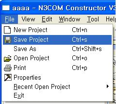
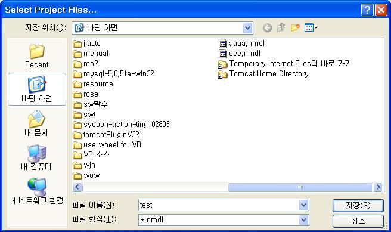
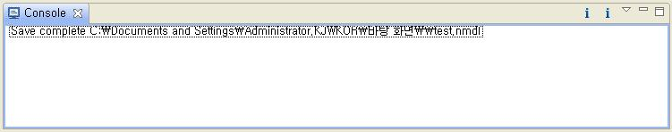

프로젝트 정보는 사용자가 원하는 때에 언제든지 저장할 수 있다. 파일 명은 프로젝트의 생성시 입력한 프로젝트 명이 사용된다. 프로젝트 정보를 저장하는 파일의 확장자는 .nmdl이다.

그림 2.1-2 프로젝트 저장
프로젝트의 내용을 작성하고 프로젝트 저장 버튼을 누르면 이름을 정할수 있는 화면이 뜬다.

그림 2.1-2 프로젝트 저장
프로젝트의 이름을 정하고 확인 버튼을 누르면 파일이 저장되고 콘솔창에 저장이 완료됐다는 메시지가 나온다.

그림 2.1-2 프로젝트 저장